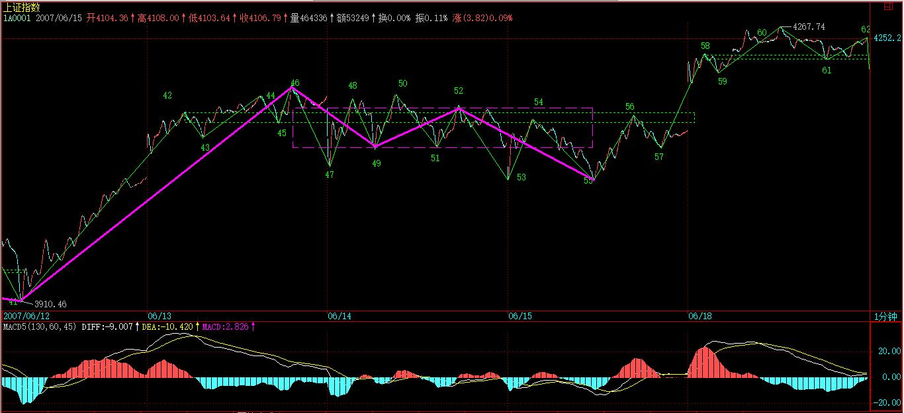
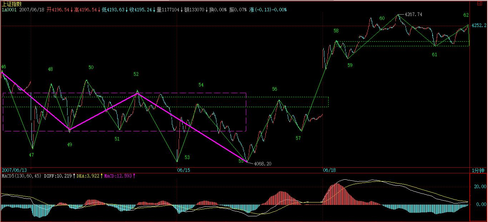
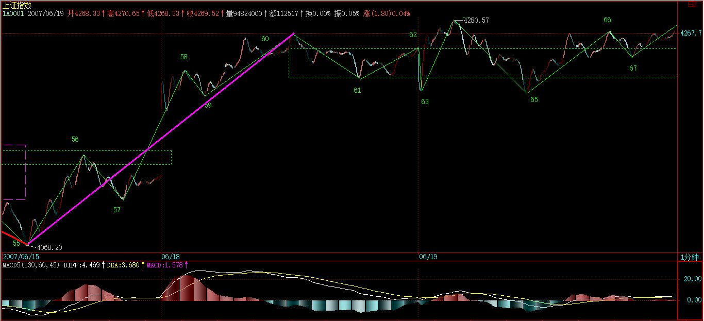
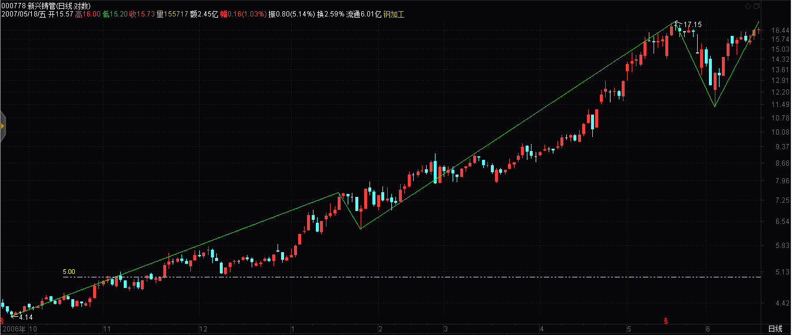

(2007-06-19 08:04:06)
其实，枯燥的图形，里面包含着很深的心理学意义。
走势，本质上是预期的合力。而预期，本质上是心理层面的。
只不过对于市场来说，可以被当成分力去形成市场合力的预期，都是被外化为市场买卖行为的。你的恐惧，如果光是在那里恐惧而没有实际的行动，那并不构成市场的交易行为。因此，所有市场行为，其实已经被如此的心理模式给过滤一遍了。
【韶山映山红】若禅精舍（陈秋明）：
所有基于形态结构、基本面、能量等各种所谓的技术买卖行为，都是预期的结果，也就是现有了一个对后市走势的预期，然后根据该预期对操作的有利性或者有弊性，而促成执行的结果。如果没有执行，那么这种预期和市场就没有关系。
走势，本质上是预期的合力，这句话几乎解释了缠论所有的原理。但这里的预期如上所述，是能反映在市场层面的预期，也就是促成具体执行行为的预期。
】
举一个简单的例子，同级别走势从B0下跌到A1反弹到B1，再跌破下跌到A2，再反弹到B2，这可以分为两类：一、B2低于A1，二、B2不低于A1。显然，第二种情况，会构成某更大级别的中枢，而第一种情况没有，因此这两种情况是有着本质区别的。
在心理层面上，A1这第一个反弹的起点，有着很强的心理暗示意义，而再次的跌破，使得这A1的价格成了一个很重要的心理位，而交易本质上都是预期的，这价位就构成了一种实在的预期分类：一、预期能重新上去A1并实际交易，二、预期不能重新上A1并实际交易、三、观望。
第三种，在实际的走势中不产生实际的交易，因此一、二种心理预期构成了市场合力，而市场的走势是这合力的当下痕迹，因此这两种心理预期的大小，并不需要实际去测量，因为市场的走势就实际反映出来了。例如，如果实际上不能重新上去，出现第一种B2低于A1的情况，那么显然在当下的情况下，第二种心理预期大于第一种。
消息面、政策面、资金面，这面那面，最终作用的都是人心，人心因预期而交易，这里关系的就是人的贪婪与恐惧、人的贪嗔痴疑慢。
而本ID的理论从不预测，没有预期，只跟随着市场合力、市场走势而行，这里无须贪婪恐惧，看图作业，如此而已。
但光知道这点还远远不够，因为没有预期可能就是最大的预期，没有贪婪恐惧可能就是最大的贪婪恐惧。不预测、不预期，并不是不可预测、不可预期，而是不为贪婪恐惧而预期、预测，是根据走势的自身规律来。
【韶山映山红】若禅精舍（陈秋明）：
涉及行为底层的心理逻辑，举个例子，贪嗔痴这些，都是有重量的，而这些重量的使力方向的集合，就是走势，看图作业的意思就是：让自己没有重量，随着市场合力的使力方向的风而上下飘动，不知道这样有没有形象点。
而不预测，不预期，并不是说不可预测，不可预期。走势的每个当下，在理论的映照下，都有明确的分类预期，这里说的预测与预期，是指被大脑的分泌物所带来的幻想，因为大脑的本能输出而做出的本能反应，其幕后指挥就是大脑的直觉幻象。我们在想象自己赚钱的时候，比实际真的赚到钱更加兴奋。
】
走势是有规律的，这规律是不患的，这不患的根源在于人贪嗔痴疑慢的不患。
为什么本ID要强调当下分解的多样性？因为走势本身就是当下形成中的，是市场各种预期的合力当下画出来的，而每种画法都是不患的，都是源自人的贪嗔痴疑慢，因此每种多样性的分解都是符合理论的，多样性不是模糊性，而是多角度去让市场本身自己去画地为牢，由此使得市场的走势万变不离本ID理论的控制之中，而这，恰好是市场自身的规律之一。
【韶山映山红】博客原图20070618.jpg（2007-06-19 08:01）】
【韶山映山红】若禅精舍（陈秋明）：
多角度去让市场本身自己去画地为牢，这是接在多样性的分解后面的句子，指的恰就是这多样性的分解，从不同角度去诠释市场，从而推导并排除掉不可能的分类，而使分类的子集缩小，此谓画地为牢。
】
不妨看看上图，上一课刚好说到“红箭头处比绿箭头高，所以不能确定该线段已经完成，还要看后面走势，由此可以知道如何去把握线段的结束”，有人可能问，为什么在这个位置不可以去预测、预期？因为市场自身并没有完成。【韶山映山红】46-47段。】
但这里的未完成，是站在人观察的级别上说的，因为所谓的走势，首先是你观察的走势，没有离开你观察的走势。不同倍数的显微镜下的世界是不同的，但市场操作的成本、交易通道、资金规模等限制了人观察并能实际操作走势的显微镜倍数不可能无限小下去，所以必须确定一个最低级别的线段，把其下一切波动给抹平了。【韶山映山红】言下之意，还是越小越好？信息完全充分，就能洞悉一切？。】
当然，根据严格的理论，用每笔成交当成最低级别，然后以此构筑线段，这样可以严格地分辨任何级别的走势，【韶山映山红】缠师想当然的理想化了。】但这根本不具有操作性，特别现在交易成本增加，可操作的级别必然要增大，因此，一些可操作级别下的波动，必须要忽视掉。【韶山映山红】如何选择性的忽略？线段划分就是一种尝试。】
【韶山映山红】若禅精舍（陈秋明）：
确定一个最低级别的线段，把其下一切波动给抹平了，也就是这个被人为定义的最低级别以下的波动，一律不计。这是实际分析中的必须，分时图中可以调整为闪电图，就是每笔交易的波动，那大概就是最小级别的了，但级别的细化与走势的完全计算，在实际操作中并没有什么用途，好似花了十倍的成本，只有0.00001%的收益。很多人喜欢去追求分析的绝对精确，却忘了分析的目的是操作、盈利，绝对精确并不能为这目的加分多少。
】
站在最严格意义上，45-46线段构成43-44线段的盘整背驰（注意，力度比较的是下面所有红柱子的面积之和。）【韶山映山红】在1分钟图上，相邻同向1分钟线段之间比较，用柱子面积，不用黄白线。】
而细致分别线段以下级别，就知道45-46其实是一个小级别转大级别，【韶山映山红】44-45的两个向下段没有线段类盘整背驰，45开始的反弹到绿色箭头位置，没有突破前低。之后没有跌下来，反而是形成二买后快速拉升，可见绿箭头之后的下跌还有小级别背驰导致上涨。45-46本身的上涨缺少次级别结构力的支持，属于44-45下跌之后小转大的上涨。46见顶后的下跌也属于小转大的下跌。】
而红箭头后第一次拉起不创新高，就可以出掉了，【韶山映山红】线段内的二卖。45-46的两个向上段没有线段类盘整背驰，46开始的下跌到红箭头的位置，没有跌破前高，还不算小转大，之后的反弹应该形成线段类上涨趋势，应该有能力创新高，但红箭头后的反弹没创新高，可见遭遇了小转大，说明有问题了，上涨的力度可能衰竭了，所以出掉。】为什么，因为后面必然形成下上下的重叠结构，也就是有一个小中枢了，而线段以下级别的同级别操作，是不参与这类中枢的。【韶山映山红】向下调整中枢。】
【韶山映山红】“45-46其实是一个小级别转大级别”，这里的45-46有三卖转二买。★以后研究。】
当然，这是按最严格的，并没有太大操作意义的分析。而实际的操作中，大概真在有意义的操作，都至少是1分钟以下线段级别的。因此，在该图中，如果你是按30分钟级别操作的，46-47的波动就可以不管的，从3404开始的反弹，一个标准的5分钟级别的上涨，【韶山映山红】3404是线段标号的19。两中枢的a+A+b+B+c趋势上涨。】因此你的持有就至少一直等待这5分钟级别的上涨出现背驰或突发破坏为止。【韶山映山红】已经形成5分钟级别的a+A+b+B+c趋势，就等出现本级别背驰，或者中枢上移小转大的“突发破坏为止”。】
【韶山映山红】若禅精舍（陈秋明）：
46位置，刚好还是10、12、14那个中枢的高点，这里的小转大，在实际盯盘中，是应该存在于预期当中的。
】
显然，46-55是一个5分钟的中枢，【韶山映山红】为什么是46开始，而不是42开始？★１，分配1分钟中枢42-45给41-42的离开段，以满足离开段的级别需求。２，离开后形成震荡，所以选择高位中枢回踩，而不是选择36-41的片段。】

55跌破53后明显盘整背驰，各位也不难发现，如果把55当成第一类买点（严格来说，盘整背驰无所谓第一类买点，只是这样来类比），57就是一个第二类买点。【韶山映山红】52-55对46-49，54-55对52-53，线段类盘整背驰。55开始的反弹是线段类上涨趋势，这个一买、二买就是这个结构的。这是49课原文的实例：“当然，如果你技术好点，可以判断出次级别的第二类买点，这些买点很多情况下都是在中枢中出现的，那当然也是可以参与的。”】
55-60，是一个标准的线段级别的上涨，59-60的背驰足够标准，看看下面MACD标准的黄白线回拉0轴，然后60新高，而柱子面积与黄白线高度都比前面不如，由此就知道了。【韶山映山红】55-60线段类上涨趋势。59-60对57-58线段类盘整背驰。将回拉58形成中枢。】
因此，按照理论，60后必然有调整回拉58之下，而实际上61就比58低，也就是说，58-61形成一个新的1分钟中枢，

该中枢是否扩展成5分钟的，【韶山映山红】1分钟上涨和5分钟上涨的边界。】以及上一个5分钟中枢的最高点，也就是46，是否被重新跌破，【韶山映山红】5分钟走势是否升级的边界。】都是今后走势的关键。
如果46不再被触及，那就是超强走势，意味着3404点开始的5分钟上涨走势依然延续。【韶山映山红】19开始的5分钟上涨趋势的延伸。】
【韶山映山红】若禅精舍（陈秋明）：
55-60，是由五段走势构成的abcde结构，这种结构一般是最强的类型，文中可以看出，与abc的盘整背驰类似，同样有e段盘整背驰后拉回c段高点的阐述。
而55那个盘整背驰点，需要观察的是54-55整段与52-53整段的力度，在54-55的内部结构中，中间小中枢后面出现第三卖点，后面的下跌并没有背驰出现，这里是没有区间套的。但52-55与46-49对比仍然是区间套，所以两个级别的区间套是成立的，只是在最小级别上市场并没有给出最终的背驰点，实际操作上这种情况是可以介入的，当然如果判断不好的话，也可以在57位置介入，这样在二买其实更好。
】
这里必须强调突发消息对市场走势以及操作的影响是不必过于在意的，本质上，任何突发的消息，不过增加了一个市场预期的当下分力，因此，最终还是要看合力本身，或者说是市场走势本身。
一般情况下，由于背驰的精确定位需要用区间套的方法，所以突发消息，最不幸的，就是在这精确定位期间出现，例如这次530，就是这样。
当然，这是一种小概率事件，更多情况，突发消息在背驰的精确定位后出现，这样突发消息对操作的影响就是0了。
而对于那种最不幸的情况，用一个第二类卖点就足以应付，因此，突发消息出来后，在实际的操作中就不能放过这第二类卖点。
不过要注意，并不是任何第二类卖点都需要反应的，这和级别有关，例如你是月线级别的，那这次所谓的大跌，看都不用看，爱跌不跌，随他去。即使你是5分钟级别操作的，如果某突发消息连一个1分钟的中枢都没破坏，只制造了1分钟以下级别的震荡，那么在所谓的第二类卖点，也是不用管的。【韶山映山红】这里说的破坏中枢，是指走势类型的破坏，而不是中枢延伸的破坏。二卖的级别怎么定？跌破哪个级别的中枢，就是哪个级别该操作的二卖。】
原则很简单，任何消息，都只是分力，关键是看对合力的影响，看他破坏了多大级别的走势，这一切都反映在实际走势中，看图作业就可以了。【韶山映山红】“看他破坏了多大级别的走势”，就是小转大分析的核心。实际上是看他破坏了哪个级别的中枢，或者是形成了哪个级别的走势。】
【韶山映山红】什么是走势类型的破坏？★跌破走势类型的中枢。】
【韶山映山红】若禅精舍（陈秋明）：
中枢的被破坏，是标志性信号，有一种情况是介入后上涨，然后中枢，但这中枢可以不用突破，在震荡期间直接向下，这虽然不多，但也并不少见，这时就必须以中枢的被破坏为标志性条件。当然实际操作的时候不一定要等到那么迟，例如日线级别中枢震荡，等三卖可以已经下跌好多了，这就必须从次级别乃至次次级别入手来规避这种风险。
消息，不是用来预测多空，而是用来测试走势。不仅大盘如此，个股也是如此，例如一个利好消息出来，股价波澜不惊，或者跳空高开，其意义是不同的，但这不可去预测，而是以走势的客观反映为当下基准。
】
注意，突发消息破坏的级别越大，越不一定等相应级别的第二类卖点。【韶山映山红】也就是说，小转大都是后知后觉的。大到哪个级别，也没谱。操作以被破坏走势的级别为准，而不是以相应等级的买卖点为准。】
例如，一个向下缺口把一个日线级别的上涨给破坏了，那么，消息出来当天盘中的1分钟，甚至线段的第二类卖点，都是一个好的走人机会，【韶山映山红】以哪个级别的走势破坏大级别走势，就以哪个级别为操作级别。跌破日线上涨的是1分钟，那就1分钟二卖走。跌破日线上涨的是线段，那就线段二卖走。】如果要等日线级别的第二类卖点，可能就要等很长时间、而且点位甚至还比不上这一点，因为走势是逐步按级别生长出来的。
还有，级别只是区分可操作空间的，为什么按级别？因为级别大，操作空间按通常情况下就大。但在快速变动的行情中，一个5分钟的走势类型就可以跌个50%，例如这次大跌，因此，一个这样的5分钟底背驰，其反弹的空间就比一般情况下30分钟级别的都大，这时候，即使你是按30分钟操作的，也可以按5分钟级别进入，而不必坐等30分钟买点了。【韶山映山红】除了重大消息之外，如何知道会是“快速变动的行情”？★★以后研究。】
【韶山映山红】“级别只是区分可操作空间的”，反过来说，某个小级别走势急剧波动的空间，和某个大级别走势波动的空间差不多，大级别操作级别的，就要按照这个小级别来操作。】进一步说，从力度分析的角度看，级别的破格提拔，就可以参考这个对照关系。】
【韶山映山红】小级别的下跌，可能有小级别的V型反转，也可能构筑一个大级别底部之后再反弹，还可能转化成大级别下跌。如何做当下的判别？★可以做个专题，以后研究。】
【韶山映山红】若禅精舍（陈秋明）：
围绕目的而使用理论，而不是以理论而理论，这是理论学习与实践的最大区别所在。而这一般都是在融会贯通之后，经过实际操作中遇到的各种问题，而后再经过反思，才可能会意识到这种问题，并有这样的突破，强求不来。
】
附录：
【韶山映山红】2007-6-19 15:48】
今天的走势昨天已经说得很清楚，4224点下不出现第三类卖点，就是强势震荡。
今天的走势，显然符合这个要求。4224点，就是上图61这位置，从60开始的1分钟中枢[4224，4254]，今后两天就看这中枢的第三类买卖点。【韶山映山红】这里已经不再是58-61中枢，而是60-63中枢。中枢后移，使得55-60成为线段类上涨趋势，连接段更完美。后移之后的中枢区间[4224，4254]是[ZD61，ZG62]。ZD没变，ZG抬高了。】

换言之，还和昨天说的一样，只要不在4224点下出现1分钟级别的第三类卖点，那就是强势，至于大盘要展开新一轮上攻，就要在4254上出现1分钟级别的第三类买点，否则大盘就在该区间内震荡继续中枢震荡延伸。【韶山映山红】58开始的1分钟中枢，到67出现第三类买点，不够9段升级，所以调整中枢划分从60开始，让55-60成为一个完整的线段类上涨趋势。】
关于大盘的剧本不变，但个股之间显然会有分化，因此不能光看大盘，
【韶山映山红】2007年6月19日上证指数的表现。】
现在的股票，在技术上无非几类：
一、创新高后回试的，这可以用第三类买点来把握；
【韶山映山红】600635大众公用。】
【韶山映山红】600432吉恩镍业，*ST吉恩。】

二、在前期高位下盘整蓄势的，这可以用小级别的第三类买点把握其突破，或在震荡低点介入；
【韶山映山红】000777中核科技。】
【韶山映山红】000600建投能源。】
【韶山映山红】000778新兴铸管。】

【韶山映山红】600777新潮实业。2016-07-06变更为新潮能源。】
【韶山映山红】000915山大华特。】
【韶山映山红】600649原水股份，2008-05-12变更为城投控股。】
【韶山映山红】600578京能热电，2013-10-10变更为京能电力。】
【韶山映山红】000802北京旅游，2014.10.24变更为北京文化。】
三、反弹受阻拉平台整理的，这个第二同样处理，只是位置与前期高位有距离；
【韶山映山红】000999三九医药，2010.02.24变更为华润三九。】
【韶山映山红】000099中信海直。】
【韶山映山红】000416健特生物，生产脑白金。2008-01-06变更为华馨实业，2008-12-30变更为民生投资，2014-04-14变更为民生控股。】
【韶山映山红】600343航天动力。】
【韶山映山红】000998隆平高科。】
【韶山映山红】000938紫光股份。】
四、依然在底部构筑双底、头肩底之类图形的，这可以用第一、二类买点把握。
【韶山映山红】不管是哪种情况，都是看好后势的解读。】
具体个股就不说了，来这里，如果希望一点脑子都不动，那是不行的。动脑子得到的东西是你自己的，否则永远都不行。
【韶山映山红】这一天的线段62-63应该算是开盘跳空成笔，然后单笔成段。】
【韶山映山红】特征描述：63一笔跌破之前的整个线段区间。跳空缺口本身并不大，不足以缺口成段。前后都有向上段，只是开盘的那几分钟有个下冲的过程。
阅读理解：跳空缺口以及随后的顺势笔走势都当做缺口对待。】
今天解盘下午3点后附录本帖。
先下，再见。
2007-6-19 08:05
今天的走势昨天已经说得很清楚，4224点下不出现第三类卖点，就是强势震荡。今天的走势，显然符合这个要求。4224点，就是上图61这位置，从60开始的1分钟中枢[4224，4254]，今后两天就看这中枢的第三类买卖点。换言之，还和昨天说的一样，只要不在4224点下出现1分钟级别的第三类卖点，那就是强势，至于大盘要展开新一轮上攻，就要在4254上出现1分钟级别的第三类买点，否则大盘就在该区间内震荡继续中枢震荡延伸。
关于大盘的剧本不变，但个股之间显然会有分化，因此不能光看大盘，现在的股票，在技术上无非几类：一、创新高后回试的，这可以用第三类买点来把握；二、在前期高位下盘整蓄势的，这可以用小级别的第三类买点把握其突破，或在震荡低点介入；三、反弹受阻拉平台整理的，这个第二同样处理，只是位置与前期高位有距离；四、依然在底部构筑双底、头肩底之类图形的，这可以用第一、二类买点把握。
具体个股就不说了，来这里，如果希望一点脑子都不动，那是不行的。动脑子得到的东西是你自己的，否则永远都不行。
2007-6-19 15:48
[匿名] 洗晕了的大道 2007-06-19 15:50:33
女王好，最近两天死抱安阳，发现这个股真垃圾啊，这两天常见到的万手买盘是您在点火么？庄家真是强啊，这样也拉不起来，洗盘这么久不知道干净了没有。另外今天生物偶拿到了涨停，谢谢女王。
==
那钢铁本ID前几天已经说了要改变剧本先让想走的人出来，你还以为本ID是说着玩的？
【韶山映山红】600569安阳钢铁。】

本ID那16只股票，加上钢铁、139、338、636，总共也就20只，找一个合适的买点应该不费劲，为什么不等到有买点再介入？
000777、000416如果不敢买，难道600635本ID还说得还不够清楚？上周初洗盘的时候，难道没机会买？
【韶山映山红】000777中核科技。】
【韶山映山红】000416健特生物，生产脑白金。2008-01-06变更为华馨实业，2008-12-30变更为民生投资，2014-04-14变更为民生控股。】
【韶山映山红】600635大众公用。】
不说了，本ID下午晚上还有事情，要去一趟西三环外某街道，先下，明早见。
2007-6-19 15:58
(2007-06-20 08:13:50)
经过20余年的改革开放，一大批优秀的企业不断涌现。这些企业在各自行业实现快速发展，成为人民币私人股权投资基金的最佳投资对象。
但在股权分置改革之前，没有良好的退出渠道，因此，该类基金只能停留在理论探讨阶段，不具备太大的实际操作价值。
而股权分置改革之后，上市公司股份有了一个通畅的退出渠道，加之目前公司上市的日益市场化，中国资本市场的超常规发展需要更多优质的上市资源，这些都形成人民币私人股权投资基金的历史发展机遇。
由于人民币非控股发起人股东股票禁售期为12个月，而外资非控股发起人股东股票禁售期36个月，客观上形成外资进入门槛较高，加之政府对外资并购“国计民生”行业的忧虑，为人民币私人股权投资基金的发展壮大提供了更宽松的环境。
由于前期对资本市场角色的定位存在严重误区，使得中国资本市场的名声并不大好，而对上市指标的严控，让上市成为一场马拉松式的公关比赛，往往花费大量财力精力而一无所获，使得许多没有太大背景的优秀企业，对上市都心存疑虑，甚至有很强的抵触情绪。
另一方面，由于中国经济高速发展的大环境，使得企业的发展机遇众多，并没有太大的危机意识，而且很多企业都以实体经济模式发展起来，甚至有些民营企业依然停留在家族式经营的模式下，对上市成为公众公司，有着巨大的观念鸿沟。
但中国实体经济的长足发展，已使得多层次资本市场的大发展成为必不可少的一环。而资本市场的基础是其中交易的上市公司，上市公司的质量成为资本市场发展是否基础牢靠的关键。一个起点就有原罪的市场不可能有正常的发展，解决上市公司的质量，最根本的就是要确立市场化的原则，让所有符合上市条件的公司都能在市场化的原则下、根据企业发展的实际选择合适时机上市，然后通过严格监管、市场淘汰，让已不达标的公司坚决退市，这样才能确保上市公司的质量。
这里最重要的前提，就是让所有符合上市条件的公司都能按照市场化的原则上市。
可以断言，这一前提正逐步变成现实，这也是中国资本市场成为全球性资本市场的一个必不可少的前提。而该前提的确立，同样为人民币私人股权投资基金的健康发展提供了最基本的保证。
另一方面，中国企业在实体经济中普遍进入发展瓶颈，必须与资本市场结合去获取新的发展动力。那些没有资本市场支持的企业，越来越面临着被有资本市场强大资金支持的企业挤压、打跨、并购的风险。
对于那些依然企图逃避资本市场的企业来说，在今后将越来越面临生存压力，在这种压力下，生存还是毁灭，是每一个企业必须面对的头等问题，而充分利用资本市场发展壮大自己，是所有符合上市条件的企业一个不能回避的必然选择。
可以断言，越来越多的企业将把自己的命运与资本市场结合在一起，这就为人民币私人股权投资基金的发展提供充足的可开采资源。
对于管理层来说，一批有社会公信力、规范运作的人民币私人股权投资基金的大发展，使得未上市资源能得到专业化、市场化、产业化、国际化的整合，为资本市场提供足够的优质上市公司。
更重要的是，该类基金的发展，使得资本市场的资源配置功能得到更有效的发挥，由此发展出的并购基金，将为市场的生态平衡起着关键的作用，有着极为广阔的发展空间。
2006年12月28日，中国银监会颁布了新的《信托公司集合资金信托计划管理办法》，“集合资金信托计划”成为在中国从事资产管理和结构融资的重要工具。
2007年6月1日实施的《合伙企业法》，为人民币私人股权投资基金提供了完备的法律架构和立法保障。换言之，2007年6月以后，人民币私人股权投资基金的发展已经不可阻挡，2007年，必定作为人民币私人股权投资基金元年记入中国资本市场发展史。
最后，将深圳中小版的基本上市条件附录如下：
发行前总股本不低于3000万元人民币；
发行前净资产在总资产比例中不低于30%；
发行前无形资产在净资产比例中不高于20%（不含土地使用权、采矿权、水面养殖权）；
发行前连续3年盈利，3年累计净利润不低于3000万元人民币，在扣除非经常性损益后以孰低为准；
发行前3年经营活动累计产生的现金流量不低于5000万元人民币，或者3年累计销售收入不低于3亿元人民币。
附录：
【韶山映山红】2007-6-20 15:36】
今天走势十分正常，一个正常的中枢震荡，【韶山映山红】震荡的低点跌破5分钟中枢60-69了，还跌进了前面的5分钟中枢46-55。】
下午13点半附近的背弛如果还不能当下看出，那么就要抓紧学习了。【韶山映山红】问题在于，类似的背驰结构已经反复出现过了，如何做当下的判断。】
具体的分析，将在课程61里。如果当下没能分析出来的，请先自己分析一下，然后对照明早的课程，这样才能提高。
由于周一那缺口还在那里，因此成为行情发展的一个隐患，【韶山映山红】2007-6-20星期三。周一是2007-6-18。】
前面已经说过，只要震荡触及4192点附近的46，那么中枢就将扩展。今天的走势已经触及该点，所以后面将是一个大的中枢震荡。【韶山映山红】中枢震荡，与前中枢震荡区间重叠，将扩张升级。这里“中枢就将扩展”说的是5分钟中枢的扩展，所以判断依据是下面的46。】
短线还是看在4224点的61，如果一个1分钟走势不能重新触及该点，就会形成一个5分钟的第三类卖点，那么震荡的区间就要往下扩展。如果能重新站稳4224点，那震荡依然是强势的。【韶山映山红】60开始的1分钟中枢已经延伸9段升级了，5分钟中枢的ZD是69，DD是65，为什么“短线还是看在4224点的61”？5分钟的三卖点不是按照5分钟中枢的点位来判断吗？★★这里“震荡的区间就要往下扩展”说的是短线1分钟中枢的扩展，所以判断依据是前面的61。69离开1分钟中枢延伸之后，70-71-72-73没有被当做一个中枢形成扩张升级，是因为73跌破了中枢区间？★显然这里69-72视为1分钟向上离开，72-75视为1分钟向下离开，1分钟向上返回不过61就5分钟三卖，这里的判断依据没有使用5分钟中枢的ZD。★可以做个专题，以后研究。】
中线看，4144点的1/2线十分关键，如果该线站不稳，那么大盘的调整级别就加大，否则就问题不大。不会看的，短线还是看5日线，中线看5周线，不破就问题不大。
个股方面，那16只里继续有几只新高了，其他在震荡后也会跟上的。昨天说那四种技术形态的个股，必须按照技术图形分别对待。特别是创新高的股票，必须注意有没有大级别背驰，有的，一定要小心，小心中了多头陷阱。如果没有背驰，或者盘整背驰最终转化为第三类买点，才可以介入。至于，其他形态的，看好技术图形就行。
【韶山映山红】这里有三段类似结构的线段划分：66-67、68-69、70-71，66-67前面还有一个类似结构。按照后来的笔线段规则，三段走势的中间横盘部分有是否成笔的问题。】
今天解盘下午3点后附录本帖。
先下，再见。
2007-6-20 08:15
今天走势十分正常，一个正常的中枢震荡，下午13点半附近的背弛如果还不能当下看出，那么就要抓紧学习了。具体的分析，将在课程61里。如果当下没能分析出来的，请先自己分析一下，然后对照明早的课程，这样才能提高。
由于周一那缺口还在那里，因此成为行情发展的一个隐患，前面已经说过，只要震荡触及4192点附近的46，那么中枢就将扩展。今天的走势已经触及该点，所以后面将是一个大的中枢震荡。短线还是看在4224点的61，如果一个1分钟走势不能重新触及该点，就会形成一个5分钟的第三类卖点，那么震荡的区间就要往下扩展。如果能重新站稳4224点，那震荡依然是强势的。中线看，4144点的1/2线十分关键，如果该线站不稳，那么大盘的调整级别就加大，否则就问题不大。不会看的，短线还是看5日线，中线看5周线，不破就问题不大。
个股方面，那16只里继续有几只新高了，其他在震荡后也会跟上的。昨天说那四种技术形态的个股，必须按照技术图形分别对待。特别是创新高的股票，必须注意有没有大级别背驰，有的，一定要小心，小心中了多头陷阱。如果没有背驰，或者盘整背驰最终转化为第三类买点，才可以介入。至于，其他形态的，看好技术图形就行。
2007-6-20 15:36
全线飘红 2007-06-20 15:35:04
检讨。自己虽然是3买进的569，但发现是盘整一直没有出来。只盯着是缠的股票，就忘了缠的理论了，没有挣到钱，损失时间成本。
==
你看看569的60分钟图，请说说10.78那天是什么？一个这么大级别的背驰，怎么可能1、2天就调整过来？本ID当天已经说得很清楚，剧本改了，要买要等待买点出现。
【韶山映山红】600569安阳钢铁】
再说一次，就算本ID没有专门提醒剧本改了，也应该看图作业，如果不明白，看看像569这样的背驰，一般是怎么调整的。569是本ID的股票，难道000999、000777、600635、600777、000778、600432、000915等等就不是？本ID对任何股票都只是按图作业。
2007-6-20 15:43
[匿名] 新股手 2007-06-20 15:43:08
老大昨天生气，跑了，不上课了。安慰一下先。呵呵。俺没学好，但俺只用你教的盯5日线，也蛮实用。530上午高点跑出来了，躲过一劫。今天上午也除掉持股的7成。呵呵。
俺的两个问题昨天没讨到答案，今天加一个：）
1，你以前说中移动回归后，联通有戏。现在中移动回归确定了，俺可以重仓联通吗？
2，416既没业绩又没题材，还要争第一吗？
3，能不能多选几支中线的股？申明不是你的。这里有人呼吁过。我顶一下。
==
好好学习理论，如果你对理论有感觉。其他问题，没什么意义。一切按图作业。【韶山映山红】如果你对理论有感觉，就好好学习理论。如果对理论没有感觉呢？】
至于600050，中线当然没问题，就看你有没有这个耐心。一般这种股票，散户都没什么必要参与。
【韶山映山红】600050中国联通。当日，以及在6124至1664阶段的表现。】
散户完全可以根据最多30分钟级别进行短线操作，这样的效率是最高的。【韶山映山红】散户有条件追逐更高的效率。也就是，做更低级别的中枢移动的操作。】当然，前提是你真明白了本ID的理论。【韶山映山红】理论学习不够的情况，还是要大级别。】
2007-6-20 15:47
[匿名] abc 2007-06-20 15:45:39
我们对于5分钟或30分钟的线段划分比较糊涂，大师能不能下次分析一个5分钟的图？
==
多少分钟的图和多少分钟的级别是没什么关系的。【韶山映山红】不存在5分钟或30分钟的线段，多少分钟的图和多少分钟的级别是没什么关系的。】如果看5分钟、30分钟去决定线段，等于用倍数很小的显微镜去看，与1分钟的唯一区别就是精度低了。【韶山映山红】如果用5分钟、30分钟作为最低级别，去划分线段，方法也还是一样的，等于用倍数很小的显微镜去看，精度低了。】用1分钟的图，一样可以判断出年线的中枢。【韶山映山红】缠师其实不愿意用5分钟作为最低级别，只不过没有明说，每次都是这样的委婉。】
2007-6-20 15:49
对不起，今天外地来了客人，本ID要去腐败去了。技术上的问题，明天61课都会说到的，如果可能，请先行分析，明天再对照。
先下，再见。
2007-6-20 15:53
[匿名] 不想飞
LS:破5日均线，是以即时为准，还是以日线为准？600015今天破了5日均线。操作是应该今天就出还是明天出。谢谢！！！请LS一定回复，我重仓！！！
－－－－－－－－－－－－－－－－－－－－－－－－－－－－－－－－－－－－日线都背，佩服你还敢拿。
2007-6-20 20:39
[匿名] 不想飞
[匿名] 快 2007-06-20 17:08:35
你看看569的60分钟图，请说说10.78那天是什么？一个这么大级别的背驰，怎么可能1、2天就调整过来？本ID当天已经说得很清楚，剧本改了，要买要等待买点出现。
===================
谁能用详细的描述(红绿柱及黄白线),
解释一下这个60F顶背驰.
======================
－－－－－－－－－－－－－－－－－－－－－－－－－－－－－
10.78创新高那天MACD的黄白线的高点低于04121400那天7.35的黄白线，当然这不能确定是顶背驰的。但是：这中间的有几波的黄白线力度在减弱，且绿柱子一段比一段明显增多。再与04121400那了黄白线的高度比较下就可以判断是顶背驰的。
2007-6-20 21:02
[匿名] 不想飞
匿名] 新浪网友 2007-06-20 21:24:48
[匿名] 新浪网友 2007-06-20 21:18:47
跌了40%后一直空仓还容易等明朗点了买了569 满想清洗下就可以了 等了6天今天才知道是什么大背弛要的时间更长 想坚定持有 可又遥遥无期 还剩一半的资金告诉我明天黯然退出了 等等看吧 不怪别人 只怪自己笨不懂 郁闷伤心 进入股市到现在赔了一半了 只有无助 没有希望
－－－－－－－－－－－－－－－－－－－－－－－－－－－－－－－
别伤心嘛！60分钟是背的，可是接下30分 15分 5分还是有买卖点的机会，只要按先卖后买的节奏还是可以解套获利的。下跌有下跌的玩法，又不是说这股票背驰的就没戏的。
把姐姐的理论学好。虽然要理解有点难.你可以多下些苦功，看她文章的时候可一边用笔抄写，一边查图反复消化。
在这里祝你：好运！
2007-6-20 22:06
本课目录
教你炒股票60：图解分析示范五2007，人民币私人股权投资基金元年